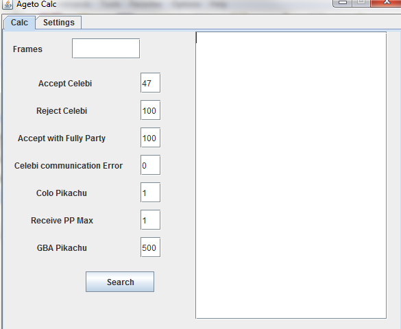
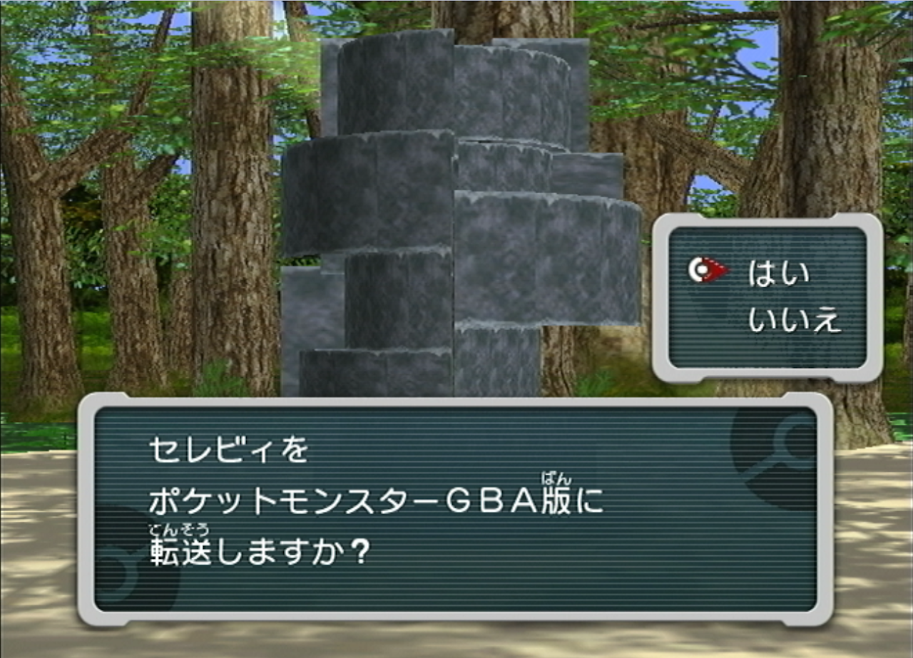
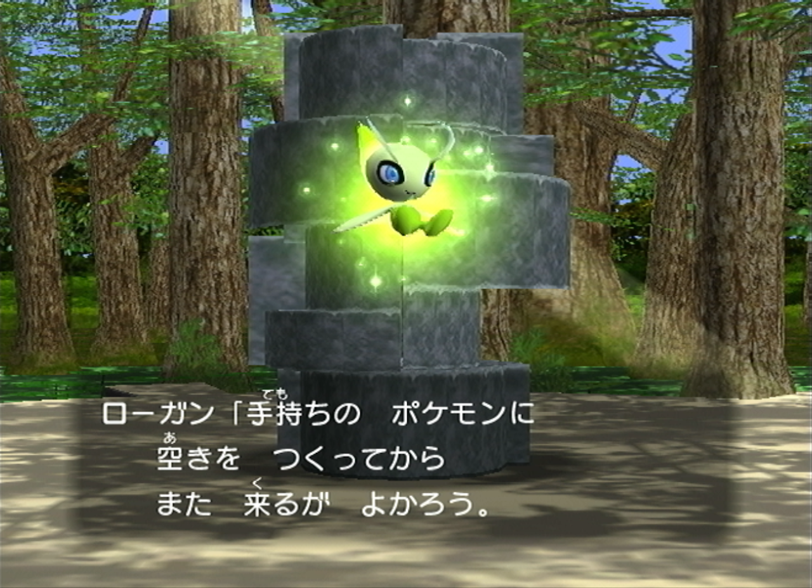
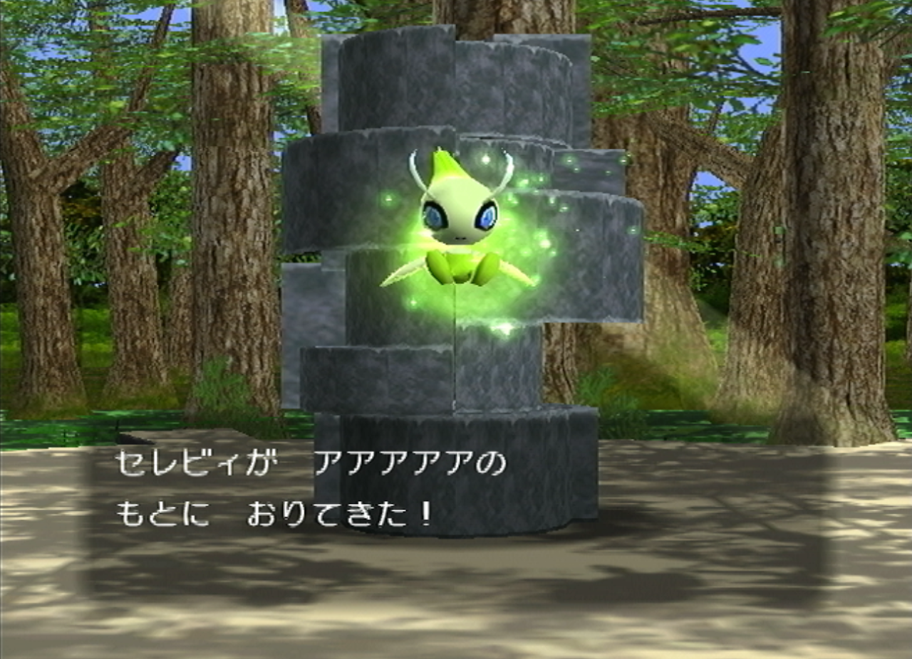
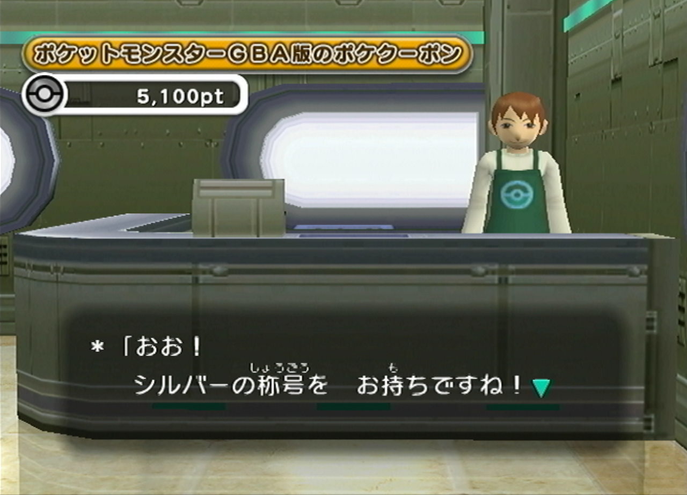
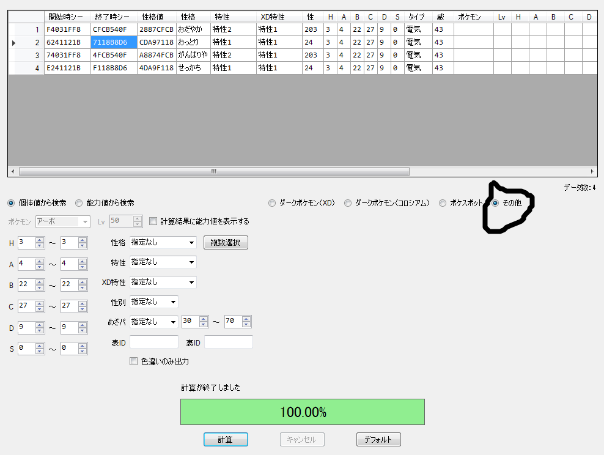
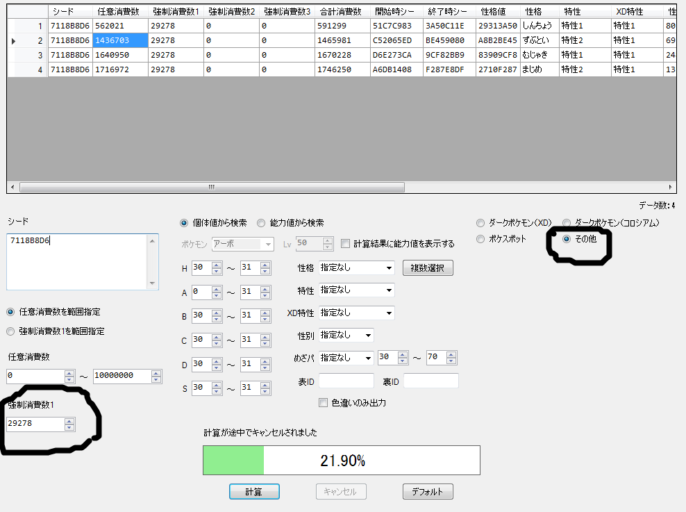
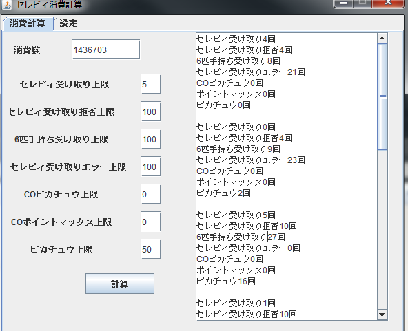
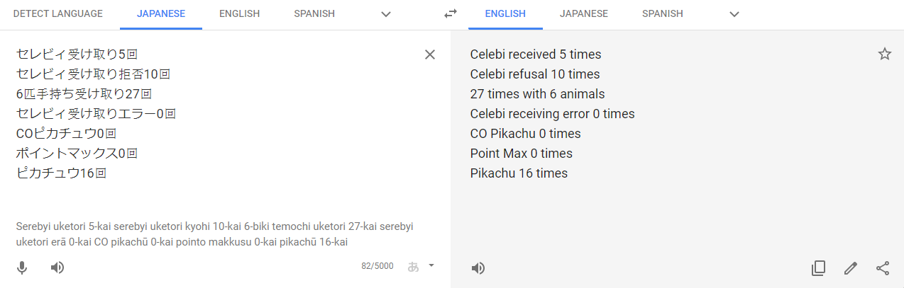

Ageto Celebi RNG
Video Guide
Text Guide
This guide will cover the way you can rng the Celebi on the Japanese Bonus Disc for Pokemon Colosseum. I will also briefly explain how the rng for the Pikachu works, but will not cover it in-depth at is is very similar to the celebi.
Prerequisits
- Japanese Pokemon Colosseum with all 48 Purified Shadow Pokemon
- Japanese Pokemon Colosseum Bonus Disc.
- GBA to GC Link cable. At least 2 Japanese GBA Pokemon Games in the Hall of Fame(Reccomend RS, since FRLG has to completely finish the Sevii Islands story to do which takes a while).
- XD Pokemon and XD Check
- 5000 Pokecoupons in at least 2 Japanese GBA Games. This is done by grinding Mt.Battle for coupons with a team from the GBA registered while the GBA is plugged in.
- A stat calculator of your choice, I reccomend Metalkids IV Calculator.
- 20 or 30 rare candies. It's easy to get rare candies using the RS Japanese item glitch:
- Or emerald clone glitch
- Or Zigzagoon pickup farming in RS
- You will also need this tool: Celebi Frame Calculator
- Password: Cerebigetdaze
- It is in Japanese but here is a translation: 
The numbers next to what you can do to frame advance are how many times you are willing to do that type of advancement. The final celebi/pikachu received IS NOT part of your advancements.
Frame advancement methods.
Each picture here will show how to do a type of frame advancement with descriptive text beneath it.
Accept Celebi: 29283 frames(Can be done up to 47 times.) Select the top option はい at this prompt.

Accept Pikachu on GC and Remove memcard: 7 frames.(Can be done infinitely). Select the option the hand is pointing at in the picture and immediately remove the GC Memcard for Pikachu.
Reject Celebi: 42488 frames(Can be done infinitely). Select the bottom option いいえ at the prompt shown.
Accept Pikachu on GC Fully: 27 frames(Can be done infinitely
Try to accept Celebi with 6 Pokemon in your party: 32048 frames(Can be done infinitely). For this, have 6 Pokemon in your party and try to accept Celebi as norma. Celebi will come down, Logan will say some things, and Celebi will fly away. This is the final text box before Celebi leaves.
Turn off GBA while receiving Celebi:42535 frames(Can be done infinitely) Select the top option,はい, at this prompt and immediately turn off your GBA Console.
Inconsistent Advances: Celebi in this specific spot will hover indefinitely before you hit the A button. 2792 frames are consumed around every 90-110 visual frames. This can be used to do some extra advances if you have no mathematically possible way to add up consistent advances to hit the frame you want. This is the text box before the yes or no prompt. Let Celebi sit here for a while.
Turn off GBA when accepting Pikachu: Turn the GBA off at this screen after the GBA is successfully connected.
Finding Initial Seed
The first thing you must do is receive the mandatory celebi to your Pokemon Colosseum save file. For our purposes this Celebi is not useful.
The next thing you must do is receive a Pikachu in GB game number 1. Determine the Pikachus exact IV values. Put this information into XD Check, along with its nature. Select the seed from the second column from the left. You must also select the circled option. This is your new current seed. 
The option to pick is the second column from the left. The one I used is highlighted in blue. The natures are in Japanese, so I reccomend using this listing to help you translate them:Bulbapedia Nature List
Finding a Target
Paste your current seed into XDPOKEMON and specify the IV ranges and the Nature of the Celebi or Pikachu that you wish to RNG. If you are trying to RNG Celebi, in the box pictured below, put 29278. This is how many frames advance before Celebi is generated.(An additional 5 frames advance afterwards, this is why receiving a Celebi advances 29283). If you are trying to RNG a Pikachu, put a 2 here instead.(Pikachu also advaces an additional 5 frames after it is generated, this is why it advances 7 when turing the GBA off.)
You can see I pasted my seed in the large box on the left, and I filled out my IV parameters. In the left circle you put the frames before the Pokemon is generated. Celebi is 29278 and Pikachu is 2. The right circled option must also be selected. Once you input the proper information, start a search.
Advancing to your Target
Once you find how many frames away your spread is, input it into the calculator. If there is a solution given by the calculator, please do the advances as instructed
In my case I had many solutions to choose from, so please do whichever is best for you.
If there is not, try doing inconsistent advances from Celebi, then check your seed again using a Celebi or Pikachu. This is done the same exact way as we found our initial seed. Alternatively, you could reset the game to try a new initial seed. However this becomes problematic, as we can only receive a Pikachu or Celebi once per save file, so we quickly run out of games to receive. And we always need to be able to receive 1 Pikachu for frame advances, and receive 1 celebi as our actual Celebi we wish to RNG.
Once you have a seed that is acceptable to RNG, do the advances. It is just a matter of doing everything the calculator says. Be fairly quick during anything during the Celebi sections, because as long as you are fast here celebi will only do consistent frame advances of accept/reject/full party/disconect. However if you linger, it will begin to go into an idle animation of 2792 frames. So do not do this.
If you cannot read the solutions because they are in Japanese, pasting them into google translate works just fine.
Notes and Conclusion
Advances can be done in any order, I reccomend doing Pikachu first as it takes the longest, then accept the final Pikachu and find its exact frame using XDPokemon, this is because you can make sure you've done the correct number of advances. Advances also take a very very long time, I got lucky and had a frame at 1.4 million, so it only took me around an hour to do everything in total, maybe more. This of course does not counting beating a lot of of games to post-game.
Let me know if you have any questions, cheers. Enjoy the celebi.
Thank you for reading, I hope you succeed in getting your Celebi or Pikachu in Pokemon Colosseum Japanese Bonus Disc. If you have any questions feel free to ask me on Twitter @im_a_blisy or join my discord. https://discord.gg/QchhXQv